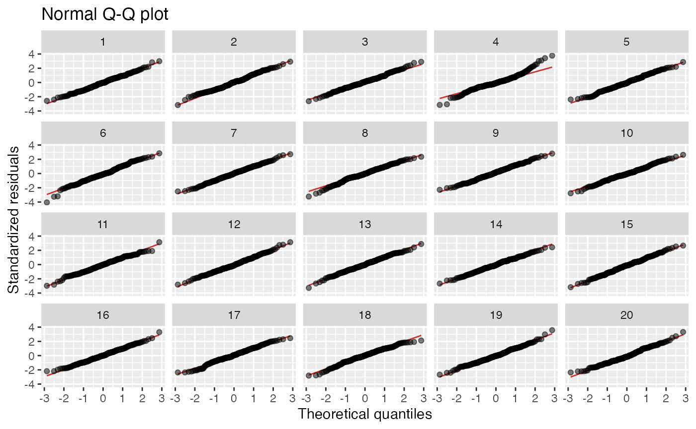
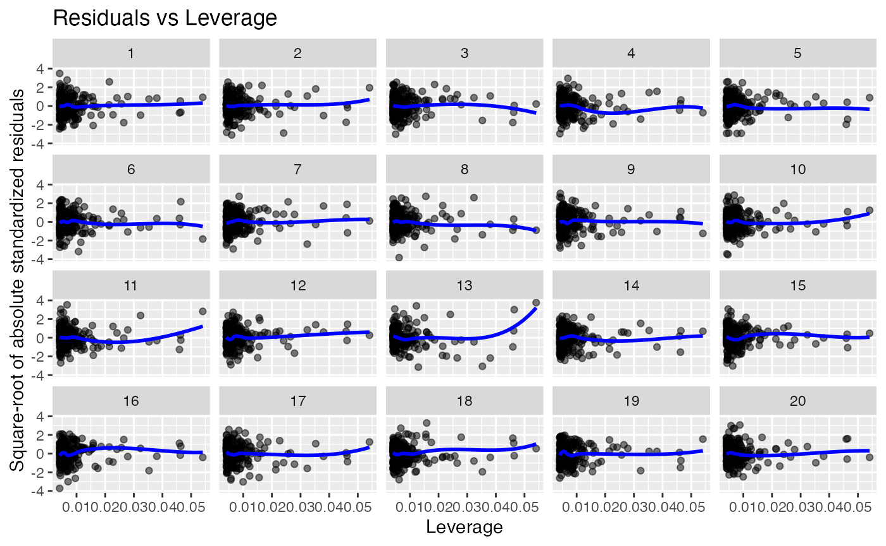

Residual plots for linear models using the nullabor package
Source:vignettes/nullabor-regression.Rmd
nullabor-regression.RmdResidual plots using the nullabor package
The nullabor package provides functions to draw residual plots for linear regression models using the lineup package.
First, fit a linear model:
The lineup_residuals function can now be used to
generate four types of residual lineup plots.
The first residual plot shows the residuals versus the fitted values.
It is used to test the hypothesis that the response variable is a linear
combination of the predictors. If you can spot the true data in the
plot, you can formally reject the null hypothesis with p-value 0.05
(Buja et al., 2009; Li et al., 2024). After running the code below, run
the decrypt message
(e.g. decrypt("XSKz 5xQx Vd Z3jVQV3d ww")) printed in the R
Console to see which dataset is the true data.
lineup_residuals(x, type = 1)
The second plot is a normal Q-Q plot for the residuals, used to test the hypothesis that the errors are normal:
lineup_residuals(x, type = 2)## Warning in lineup_residuals(x, type = 2): Method "rotate" does not generate
## normal residuals. Using method = "pboot" instead.
The third plot is a scale-location plot used to test the hypothesis that the errors are homoscedastic:
lineup_residuals(x, type = 3)The fourth plot shows leverage, and is used to identify points with high residuals and high leverage, which are likely to have a strong influence on the model fit:
lineup_residuals(x, type = 4)
The plots are created using ggplot2 and can be modified
in the same way as other ggplots. In addition,
lineup_residuals has arguments for changing the colors
used:
library(ggplot2)
lineup_residuals(x, type = 3,
color_points = "skyblue",
color_trends = "darkorange") +
theme_minimal()If the null hypothesis in the type 1 plot is violated, consider using a different model. If the null hypotheses in the type 2 or 3 plots are violated, consider using bootstrap p-values; see Section 8.1.5 of Thulin (2024) for details and recommendations.
References
Buja, A., Cook, D., Hofmann, H., Lawrence, M., Lee, E.-K., Swayne, D. F, Wickham, H. (2009) Statistical Inference for Exploratory Data Analysis and Model Diagnostics, Royal Society Philosophical Transactions A, 367:4361–4383, DOI: 10.1098/rsta.2009.0120.
Li, W., Cook, D., Tanaka, E., & VanderPlas, S. (2024). A plot is worth a thousand tests: Assessing residual diagnostics with the lineup protocol. Journal of Computational and Graphical Statistics, 1-19.
Thulin, M. (2024) Modern Statistics with R. Boca Raton: CRC Press. ISBN 9781032512440. https://www.modernstatisticswithr.com/